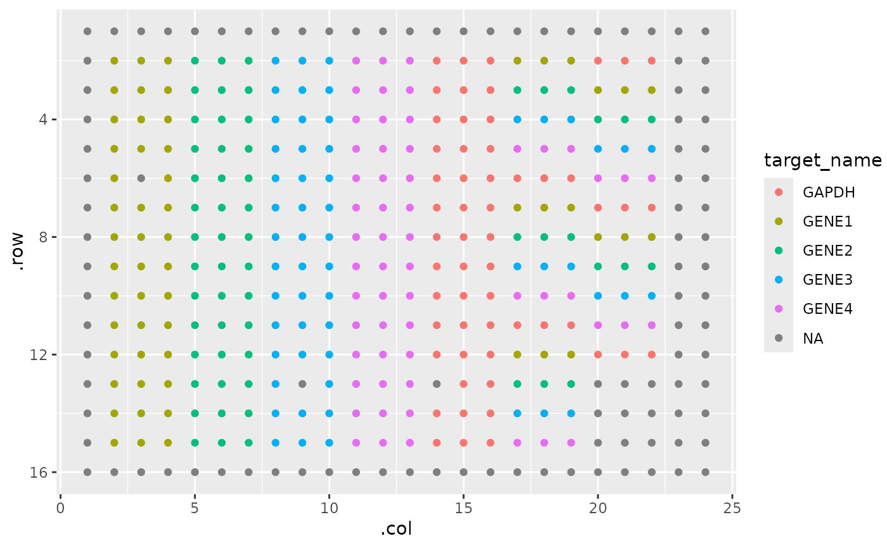

View sample plating layout
pcr_plate_view.RdView sample plating layout
Examples
system.file("extdata", "untidy-pcr-example.xls", package = "amplify") |>
read_pcr() |>
pcr_plate_view()
#>
#> ── Column specification ────────────────────────────────────────────────────────
#> cols(
#> .default = col_double(),
#> `Well Position` = col_character(),
#> Omit = col_logical(),
#> `Sample Name` = col_character(),
#> `Target Name` = col_character(),
#> Task = col_character(),
#> Reporter = col_character(),
#> Quencher = col_character(),
#> Quantity = col_logical(),
#> `Quantity Mean` = col_logical(),
#> `Quantity SD` = col_logical(),
#> CT = col_character(),
#> `Delta Ct` = col_logical(),
#> `Automatic Ct Threshold` = col_logical(),
#> `Automatic Baseline` = col_logical(),
#> Comments = col_logical()
#> )
#> ℹ Use `spec()` for the full column specifications.
#> pcr is not tidy, tidying.
